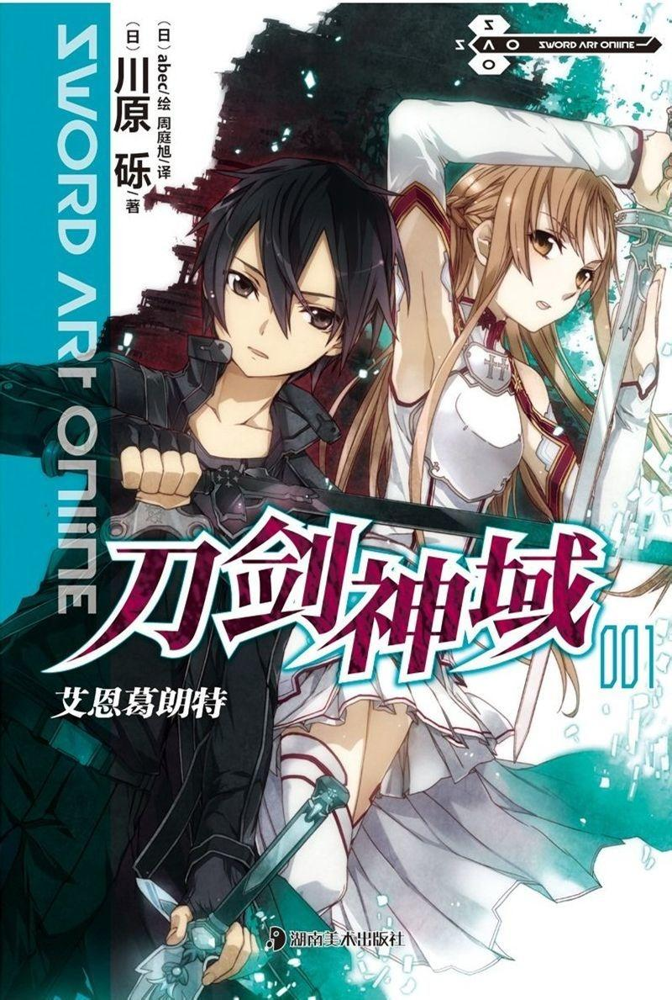

川原砾著作的轻小说
刀剑神域

《刀剑神域》是轻小说家 川原砾著作，插画家abec负责插画，电击文库所属的轻小说。
本作繁体中文版由台湾角川发行，简体中文版由天闻角川发行。
本作原本是川原砾为了参加2002年的电击游戏小说大奖而写的长篇小说，但由于文章过长而无法参加后，改为在网络上以“九里史生”的名义连载。连载时间是2002年11月～2008年7月，2004年开始受到大量关注。
《刀剑神域》系列到2014年8月9日发售的第15卷（系列第17本）之时累计发行量将突破1000万本，是电击文库轻小说继《 魔法的禁书目录》之后，日本累计发行量超过千万的第二部作品。目前其全球销量突破2000万部，其中日本本土的销量为1310万部，在电击文库中仅次于《魔法的禁书目录》。